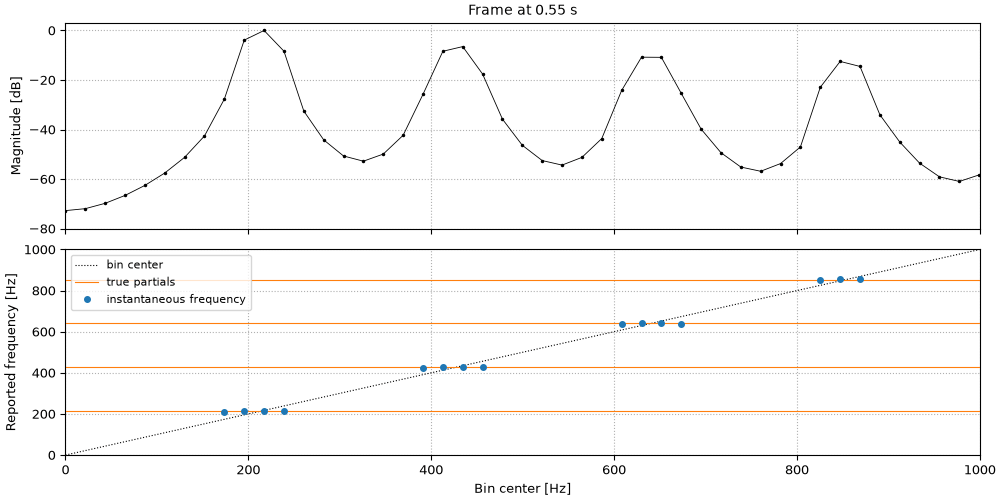
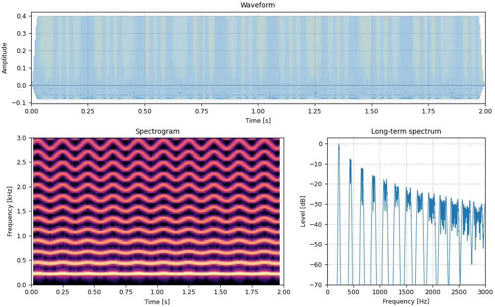

Play a recording faster and it gets shorter and higher at once. The phase vocoder (Flanagan &
Golden, 1966) pulls the two apart: it measures the frequency of every partial in every short
frame, precisely enough to rebuild the sound with its frames spaced differently, or its
partials moved, while everything else stays the same.
How it works: the STFT, and the frequency hidden in how fast each bin's phase turns.
Changing duration: frames resynthesized further apart, and why their phases have to be locked.
Press play and a line follows the sound across every time axis in its plots. Click any time
axis to play from that point. The audio is lossless, since compression would alter the binaural sounds.
Start with your volume low.
How it works
The analysis is a short-time Fourier transform: Hann windows 46 ms long, one every quarter
window, H_a samples apart. Each bin k of the transform is a bandpass filter centered on
\omega_k = 2\pi k / N radians per sample, and its output is a slowly varying sinusoid with a
magnitude and a phase \varphi_k(m) in frame m.
The bins are f_s/N apart, about 22 Hz here, far too coarse to say where a partial lies. The
phase says it precisely. A partial at exactly \omega_k advances the phase by \omega_k H_a
from one frame to the next; any extra advance, wrapped into (-\pi, \pi], is the partial's
offset from the bin center:
The wrap is unambiguous only while the offset stays within \pm\pi/H_a, which is why the hop is
a quarter window: the bins a Hann window's main lobe reaches are then all close enough. Every
bin near a partial reports that partial's frequency, the instantaneous frequency, and with
magnitudes and instantaneous frequencies in hand the sound can be rebuilt differently.
so.pv_analyze returns all three.
import matplotlib.pyplot as plt
import numpy as np
import sonore as so
plt.rcParams.update({"font.size": 9, "axes.titlesize": 10, "figure.dpi": 100})
FS = 44100
def finish(snd):
"""How every sound in the gallery is played: 5 ms ramps, RMS 0.1, peak at most 0.95."""
snd = snd.ramp(5e-3).normalize(rms=0.1)
return snd.normalize(peak=0.95) if snd.peak > 0.95 else snd
def vibrato_complex(dur=2.0):
"""A 220 Hz harmonic complex, partials falling as 1/k, with a 5 Hz, ±3% vibrato."""
t = np.arange(int(dur * FS)) / FS
phase = 2 * np.pi * np.cumsum(220 * (1 + 0.03 * np.sin(2 * np.pi * 5 * t))) / FS
return so.Sound(sum(np.cos(k * phase) / k for k in range(1, 20)), FS).normalize().ramp(30e-3)
def show(snd, fmax=3000):
"""Waveform, spectrogram (Hann 46 ms) and long-term spectrum.
Returns the figure and the panels the playhead follows."""
fig = plt.figure(figsize=(10, 6.2), layout="constrained")
gs = fig.add_gridspec(2, 2, height_ratios=[1, 1.6], width_ratios=[1.6, 1])
ax_w, ax_s, ax_f = fig.add_subplot(gs[0, :]), fig.add_subplot(gs[1, 0]), fig.add_subplot(gs[1, 1])
snd.plot(ax_w, lw=0.5)
so.STFT(snd, 46e-3).plot(ax_s, fmax=fmax, colorbar=False, db_range=70)
spec = so.long_term_spectrum(snd, nperseg=16384)
ax_f.plot(spec.f, spec.level - spec.level.max(), lw=0.8)
ax_f.set(
xlim=(0, fmax),
ylim=(-70, 3),
xlabel="Frequency [Hz]",
ylabel="Level [dB]",
title="Long-term spectrum",
)
ax_f.grid(ls=":")
return fig, [ax_w, ax_s]
sung = vibrato_complex()
pv = so.pv_analyze(sung)
# The sentence from Seeing speech, at its native 16 kHz. Sources: docs/speech/SOURCES.md.
sentence = finish(so.load("docs/speech/bdl_arctic_a0131.flac"))
Each bin reports its partial
One frame of the reference tone below, 0 to 1 kHz. Top: the magnitude of each bin, with the
partials' main lobes spanning several bins each. Bottom: the frequency each bin reports. Across
each main lobe the estimates agree on one value, the partial's frequency at that moment (orange),
which the vibrato has pushed away from the bin centers (dotted).

Code
m = int(np.argmin(np.abs(pv.t - 0.55)))
centers = np.arange(pv.magnitude.shape[1]) * FS / pv.n_win
level = 20 * np.log10(pv.magnitude[0, :, m] / pv.magnitude[0, :, m].max() + 1e-12)
loud = level > -30
f0 = 220 * (1 + 0.03 * np.sin(2 * np.pi * 5 * pv.t[m])) # the vibrato at this moment
fig, (ax_m, ax_f) = plt.subplots(2, 1, figsize=(10, 5), sharex=True, layout="constrained")
ax_m.plot(centers, level, ".-", color="k", lw=0.6, ms=3)
ax_m.set(ylim=(-80, 3), ylabel="Magnitude [dB]", title=f"Frame at {pv.t[m]:.2f} s")
ax_f.plot(centers, centers, ":", color="k", lw=0.8, label="bin center")
for k in range(1, 5):
ax_f.axhline(k * f0, color="tab:orange", lw=0.8, label="true partials" if k == 1 else None)
ax_f.plot(centers[loud], pv.freq[0, loud, m], "o", color="tab:blue", ms=4, label="instantaneous frequency")
ax_f.set(xlim=(0, 1000), ylim=(0, 1000), xlabel="Bin center [Hz]", ylabel="Reported frequency [Hz]")
ax_f.legend(fontsize=8, loc="upper left")
for ax in (ax_m, ax_f):
ax.grid(ls=":")
Changing duration
To make a sound twice as long, so.time_stretch reads frames every H_a samples and writes
them out every H_s = 2H_a. Magnitudes are copied as they are, but phases cannot be: a partial
now has H_s samples, not H_a, to get from one frame to the next, so each synthesis phase is
the previous one advanced by the instantaneous frequency times the new hop,
\psi_k(m) = \psi_k(m-1) + \hat\omega_k(m)\, H_s.
Overlap-adding the frames then gives a sound twice as long whose partials have the same
frequencies. Every bin advances its own phase independently, though, and the bins that make up
one partial slowly drift out of step with each other, which smears the sound, a fault known as
phasiness. so.time_stretch therefore locks the phases (Laroche & Dolson, 1999): only the
bins at spectral peaks are advanced, and each bin around a peak keeps its original phase offset
from it.
Reference
A 220 Hz harmonic complex with a 5 Hz, ±3% vibrato.
11_reference.flac, 2.0 s, mono

Code
sound = finish(sung)
fig, playhead = show(sound)
Twice as long
Same pitch, double duration. The vibrato slows to 2.5 Hz as well: time stretching stretches
every temporal feature.
so.pitch_shift stretches the sound by the pitch ratio, then resamples it back to the original
length: the resampling raises every frequency by the ratio and undoes the stretch. Raising the
pitch by s semitones stretches by 2^{s/12}. Everything in the spectrum moves together, the
formants of a voice included.
Up a fifth
Seven semitones higher, same duration, same 5 Hz vibrato.
The sentence up a fifth. Its formants have moved up with the pitch, so it sounds like a
smaller speaker, not the same speaker higher: keeping the formants in place needs the spectral
envelope separated from the harmonics first, as on the Cepstral analysis page.
The analysis can also drive a bank of oscillators, one per bin, each following its bin's
magnitude and instantaneous frequency from frame to frame (Dolson, 1986). pv.resynthesize
does this, and its freq_map changes every frequency on the way: a ratio scales them all, a
function can do anything. Scaling keeps a harmonic sound harmonic; adding a constant does not,
unless the constant is a multiple of half the fundamental.
Partials shifted up 70 Hz
Oscillator-bank resynthesis with every partial moved up 70 Hz, to 290, 510, 730 Hz and on:
still 220 Hz apart, but no longer harmonics of anything nearby, so the tone turns metallic and
its pitch less certain.
The same with half the spacing: 330, 550, 770 Hz are exactly the odd harmonics of 110 Hz. The
result is harmonic again, a hollow, clarinet-like tone an octave below the reference.